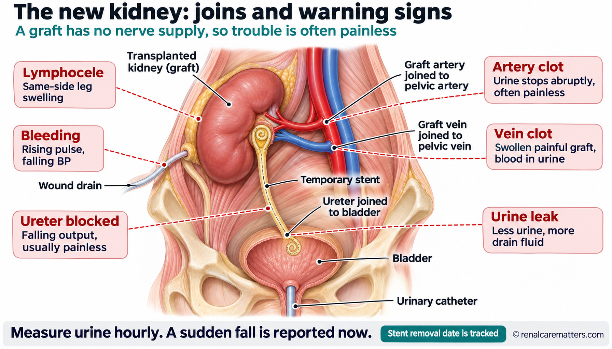
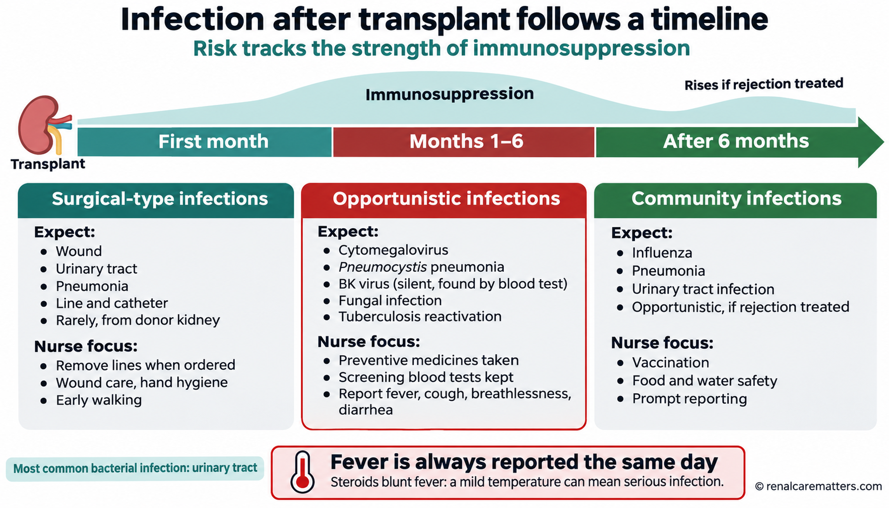
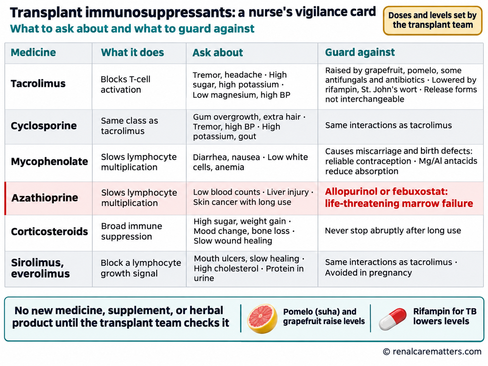
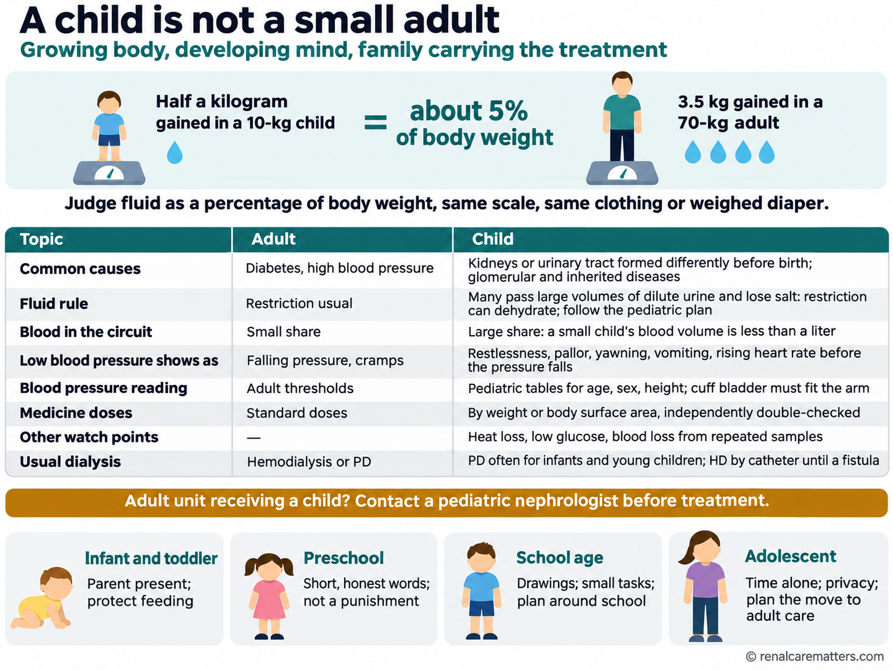
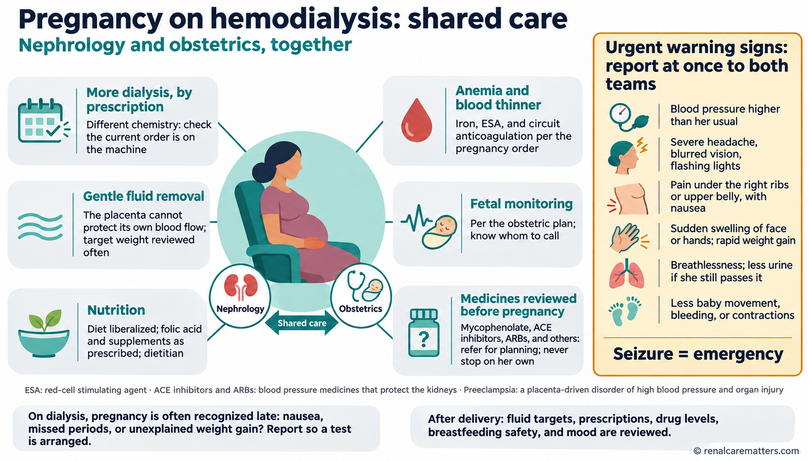

After this module you should be able to
- Explain why and when people with advanced kidney disease are referred for transplant evaluation.
- Assess a new transplant recipient and recognize findings that need urgent reporting.
- Explain how immunosuppressants work, why timing matters, and how to respond to a missed dose.
- Describe infection risk after transplantation and the nurse’s preventive role.
- Identify key considerations when caring for children, pregnant women, and frail or medically complex adults on dialysis.
- Describe donor types, compatibility testing, and sensitization, and explain what candidate and living-donor evaluation are designed to find.
- Outline nursing priorities before and after transplant surgery by time frame, and recognize surgical complications, rejection, and the infections typical of each period.
- Identify the main side effects, interactions, and cautions of each immunosuppressant class, and teach long-term health maintenance after transplantation.
- Adapt kidney nursing care for children, pregnant women, older and frail adults, people with diabetes, and people living with blood-borne viral infection.
- Explain how growth, development, body size, and family life change kidney and dialysis nursing care for children, and how an adolescent is prepared for transfer to adult services.
- Describe the main risks of pregnancy in chronic kidney disease (CKD), on dialysis, and after transplant, the principles of intensified dialysis in pregnancy, the medicines that must be reviewed before conception, and the signs of preeclampsia that need immediate reporting.
A new kidney and a standing truce
Think of a guest who moves into a house where the guard dogs have never seen him. The dogs would attack, so they are kept on a leash. Hold the leash too loosely and the guest is bitten. Hold it too tightly and the dogs cannot chase away a real intruder. A transplanted kidney lives with that leash every day. The leash is immunosuppressive medicine.
The picture has a limit. The immune system is not a pair of dogs that can be watched. It acts silently, inside the kidney, and the first sign of trouble is often only a rising creatinine. Too little immunosuppression and the kidney is rejected. Too much and infections and some cancers gain ground. The medicines have a narrow safe range, and blood levels are measured to keep each patient inside it.
Most recipients do well for years. A few lose a kidney to a complication found late or to doses that were missed. Your work is to notice early when something is off, and to teach so well that doses are not missed.
From referral to the first week
Referral. The Kidney Disease: Improving Global Outcomes (KDIGO) candidate guideline recommends that all patients with advanced chronic kidney disease (CKD) who are expected to reach kidney failure be informed of, educated about, and considered for transplantation, regardless of socioeconomic status, sex, or ethnicity. It recommends referral at least 6 to 12 months before dialysis is expected, so that a transplant before dialysis is possible. Patients already on dialysis are referred when medically stable.1 Age alone is not a reason to exclude. The evaluation looks for conditions that would make surgery or immunosuppression unsafe, and for barriers to taking medicines for life.
The first days. The new kidney is placed in the lower abdomen and joined to the pelvic vessels and the bladder. Urine output is the most immediate sign of function, so it is measured every hour. Intravenous fluid is commonly prescribed to match it. A kidney from a living donor usually works at once. A kidney from a deceased donor may be slow to start, because it was injured during storage. When dialysis is needed in the first week, this is called delayed graft function (DGF).2
A sudden fall in urine output is different from a slow start. Sort its causes as you sorted acute kidney injury in Module 4. Before the kidney: low blood volume, or a clot in the artery or vein. In the kidney: rejection, tubular injury, or drug toxicity. After the kidney: a blocked catheter, or a blocked or leaking ureter.
Immunosuppressants. Most recipients take a combination: commonly a calcineurin inhibitor such as tacrolimus, an antiproliferative agent such as mycophenolate, and a corticosteroid.3 Calcineurin inhibitors block the activation of T lymphocytes. Their blood level is measured as a trough, the lowest level just before the next dose. Blood is therefore drawn before the morning dose is taken. Many medicines and foods change these levels by altering drug breakdown in the liver and gut. Common examples are certain antifungals and antibiotics, some anticonvulsants, grapefruit, and herbal products.
When urine output falls after a transplant, think before, in, and after the kidney, and check the catheter first because it takes seconds.

Donors, matching, and the path to a transplant
Where kidneys come from. A kidney may come from a living related donor: a parent, sibling, or adult child. It may come from a living unrelated donor, most often a spouse or close friend. Or it may come from a deceased donor, whose family has consented after death has been declared. A living-donor transplant can be scheduled. The kidney spends only minutes without blood flow, and the operation can happen before dialysis is ever needed. On average these kidneys start working sooner and last longer. Deceased-donor kidneys depend on a waiting list, and the wait is long wherever donation rates are low.
Three layers of compatibility.
- Blood group. The donor’s blood group must be compatible with the recipient’s by the same rules that govern red-cell transfusion. Transplantation across incompatible blood groups is possible only in specialized programs with antibody-removal treatment.
- Human leukocyte antigens. These are the proteins on cell surfaces that the immune system uses to tell self from non-self. They are inherited as a set from each parent, which is why a sibling may match fully, half, or not at all. A closer match is associated with longer graft survival, but with modern medicines a poor match does not prevent a transplant.
- The crossmatch. The recipient’s serum is tested against the donor’s cells to see whether the recipient already has antibodies against that donor. A positive crossmatch predicts immediate, severe rejection, and the transplant generally does not proceed with that donor. The test is repeated shortly before surgery because antibody levels change.
Sensitization means the candidate has already made antibodies against human leukocyte antigens. Three exposures cause it: a previous transplant, pregnancy, and blood transfusion. A highly sensitized patient has a positive crossmatch against most donors and may wait years. That is why transfusion is avoided where possible in anyone who may one day receive a transplant, and why anemia is managed ahead of time with iron and stimulating agents.4 When you question a non-urgent transfusion order for a transplant candidate, you are protecting that patient’s future.
Candidate evaluation. The work-up asks three questions. Will the patient survive the operation? Will immunosuppression be safe? Can the kidney be looked after for decades? It therefore covers the heart and blood vessels and infections that could flare under immunosuppression, including tuberculosis, hepatitis B and C, and human immunodeficiency virus (HIV). It covers cancer screening suited to age, the bladder and urinary tract, the pelvic arteries where the kidney will be joined, dental health, vaccination, psychosocial support, and the means to obtain medicines. The KDIGO guideline lists reasons to defer or exclude: active infection, active cancer, severe irreversible heart or lung disease, limited life expectancy from another illness, and unstable psychiatric illness or ongoing substance use that affects decisions or the ability to take medicines reliably.1 Most of these are reasons to treat and reassess, not permanent refusals. Controlled HIV infection and hepatitis B or C are not in themselves contraindications.1 Nurses keep the work-up moving: vaccinations completed, dental clearance done, results that do not expire unnoticed, and a patient who stays fit for surgery while waiting.
The living donor is a patient too. The donor undergoes an operation with no medical benefit to themselves, so the evaluation is built around the donor’s safety. It confirms two healthy kidneys with enough function to spare one. It looks for high blood pressure, diabetes or its precursors, protein in the urine, kidney stones, obesity, and transmissible infection. Three principles apply. Clinicians independent of the recipient’s interests assess the donor. The decision must be voluntary, informed, and free of pressure or payment, and the donor may withdraw at any time, confidentially, without explaining to the family. Follow-up is lifelong: yearly blood pressure, kidney function, and urine protein, with advice to avoid nephrotoxic medicines and keep a healthy weight. If you sense that a donor is being pressured, or is unsure, tell the transplant coordinator privately.
Philippine context. Living donors provide a large share of the kidneys transplanted in the Philippines. Transplant centers are concentrated in a few cities, so many candidates travel far for evaluation and follow-up. The sale of organs is prohibited. Living donation, particularly from unrelated donors, is regulated and reviewed by hospital ethics committees. Financial planning is part of your assessment from the start. The operation is a one-time cost. The medicines are a lifelong one.
Every unnecessary transfusion can lengthen a candidate’s wait. Ask before blood is given to anyone who may one day receive a kidney.
Perioperative nursing, by time frame
Before surgery. The aim is a patient who reaches the operating room with a safe potassium, a sensible fluid status, and the first immunosuppression already given.
- Dialysis and potassium. Record when the last dialysis was and how much fluid was removed. A patient on dialysis is often treated shortly before surgery; removing too much fluid leaves the new kidney under-perfused, so the target is set by the transplant team. The potassium result is seen by a physician before the patient leaves the ward. A patient on peritoneal dialysis is usually drained before going to the operating room.
- Final checks. Nothing by mouth from the time ordered, the final crossmatch result confirmed, blood group verified, consent complete, infection screen: fever, cough, a skin or access infection, or a recent peritonitis is reported, because a transplant under immunosuppression is postponed for active infection.
- Protect the access. The fistula arm is labeled, and no blood pressure cuff or cannula goes on it; the access may be needed again if the graft is slow to function.
- Induction immunosuppression. The first doses are timed to precede the moment blood enters the new kidney. They are given exactly at the times ordered and documented; a delay is reported, not absorbed. Reactions to antibody induction agents (fever, chills, low blood pressure, breathing difficulty) are watched for as the protocol directs.3
Why blood pressure matters so much after surgery. A native kidney holds its blood flow steady across a range of pressures. A freshly transplanted kidney has lost its nerve supply and cannot do this. A period of low pressure that a healthy person would tolerate can injure it. Replacing urine losses too slowly has the same effect. The table shows what this means hour by hour.
| Period | What is happening | Nursing priorities |
|---|---|---|
| First 24 hours | The kidney has lost its nerve supply and its ability to protect its own blood flow, so it depends directly on blood pressure and volume. A working living-donor kidney may produce very large urine volumes with heavy losses of potassium and other electrolytes; a deceased-donor kidney may produce little2 | Hourly urine output with intravenous replacement matched to it as ordered. Blood pressure kept within the range the team specifies, with both low and very high readings reported promptly. Potassium and other electrolytes at the ordered intervals. Bleeding: pulse, blood pressure, wound, drain, abdominal girth, hemoglobin. Urinary catheter patency: clots are common and a blocked catheter mimics graft failure and strains the new bladder join. Pain control without nonsteroidal anti-inflammatory drugs |
| Days 2 to 7 | Creatinine should fall day by day. DGF, if present, is managed with dialysis while the kidney recovers | Daily creatinine trend and weight. Wound and drain: volume and character. Early walking, breathing exercises, and bowel care. Drug levels drawn before the morning dose. Blood sugar, which often rises with steroids and tacrolimus. Teaching starts now, a little each day, and includes the family. During DGF: gentle fluid removal on dialysis, avoiding low blood pressure, and reassurance that a slow start is usually temporary2 |
| Weeks to months | Highest risk period for rejection and opportunistic infection; doses are adjusted frequently | Clinic visits are frequent at first and then spaced out as the program schedules. The ureteral stent is removed by a minor procedure at the time the surgeon sets; a forgotten stent causes infection and stones, so the date is tracked. Preventive antimicrobial medicines are taken for the prescribed period. The patient keeps a home record of temperature, weight, blood pressure, and urine output as taught3 |
Follow the ordered blood pressure range and the replacement formula exactly. Call early when you cannot meet them.
In the first days, the new kidney lives on the pressure and volume you maintain. Hourly output is your window onto it.
Complications: surgical, immune, and infectious
Surgical complications cluster in the first days and weeks. Each has a time and a signature.
| Surgical complication | Typical timing | Telltale signs |
|---|---|---|
| Bleeding | First hours to days | Rising pulse, falling blood pressure, falling hemoglobin, swelling or pain over the graft, blood in the drain |
| Clot in the artery | First days | Urine stops abruptly, often without pain; creatinine rises |
| Clot in the vein | First days | Sudden swollen, painful graft, blood in the urine, falling output |
| Urine leak | First days to weeks | Falling urine output with rising drain output or clear fluid from the wound; pain, swelling; the leaked fluid has a creatinine far higher than blood |
| Ureter obstruction | Days to months, including after stent removal | Falling output and rising creatinine, usually painless because the graft has no nerve supply; swelling of the kidney’s drainage system on ultrasound |
| Lymphocele (a collection of lymph beside the graft) | Weeks | Fullness over the graft, swelling of the leg on the same side, urinary frequency, or a rising creatinine from pressure on the ureter |
Rejection. Rejection is the immune system damaging the graft. The essential point is that it is usually silent. With modern immunosuppression, fever and a tender, swollen graft are uncommon. Most rejection is found because a routine creatinine has risen, sometimes with new protein in the urine, higher blood pressure, or a small fall in urine output. That is why recipients come for blood tests when they feel perfectly well. It is also why you report a creatinine above the patient’s baseline the same day, without waiting for symptoms. A rising creatinine has other causes: dehydration, high tacrolimus or cyclosporine levels, obstruction, infection, or BK virus. A biopsy of the graft confirms the diagnosis.3
Two main types are described. In cell-mediated rejection, T lymphocytes invade the kidney tissue. It usually responds to treatment. In antibody-mediated rejection, antibodies against the donor attack the lining of the graft’s small vessels. It is harder to treat and is closely linked to missed medicines. Rejection found early is usually reversible, which is the whole argument for surveillance.
Before a graft biopsy, confirm that blood pressure is controlled and clotting has been checked. Afterward, keep the patient resting as ordered, observe vital signs and the puncture site, and look at each urine sample for blood.
Infection follows a timeline, because the level of immunosuppression and the exposures change.3
| Period | Typical infections | Nursing focus |
|---|---|---|
| First month | The infections of any surgical patient: wound, urinary tract, pneumonia, catheter and line infections; occasionally infection carried in the donor kidney | Remove lines and urinary catheters as soon as ordered; wound care; hand hygiene; early walking |
| Months 1 to 6 | Opportunistic infections, when immunosuppression is at its peak: cytomegalovirus, Pneumocystis pneumonia, BK virus, fungal infection, and reactivation of latent infection such as tuberculosis | Adherence to preventive medicines; attendance for screening blood tests; low threshold for reporting fever, cough, breathlessness, or diarrhea |
| After 6 months | Mostly community infections (influenza, pneumonia, urinary tract infection), but opportunistic infections return whenever immunosuppression is increased to treat rejection | Vaccination, food and water safety, prompt reporting |
Urinary tract infection is the most common bacterial infection after kidney transplantation. It can reach the graft with little warning, so report fever, burning, cloudy urine, or graft discomfort promptly. Cytomegalovirus can cause fever, fatigue, low blood counts, diarrhea, or pneumonia. The risk is highest when the donor has had the virus and the recipient has not. BK virus causes no symptoms and is found by screening blood tests. Its treatment is a careful reduction of immunosuppression. Preventive medicines against Pneumocystis and cytomegalovirus are prescribed for a period the program sets.3
Fever in a recipient is always reported the same day. Immunosuppressants, steroids above all, blunt fever and the other signs of inflammation. A modest temperature can come with a serious infection. Teach the patient not to treat a fever at home and wait.
Rejection rarely hurts. A creatinine above baseline is the alarm, and it is reported the day you see it.

The immunosuppressants: what to ask about and what to guard against
You do not choose these medicines or their doses. You are often the first to hear about a side effect, a new prescription from another clinic, or an empty pill box. The table gives what each agent does, what to ask about, and where the dangers lie.3
| Medicine | What it does | Side effects to ask about | Interactions and cautions | Monitoring |
|---|---|---|---|---|
| Tacrolimus | Blocks T-lymphocyte activation | Tremor, headache, burning or tingling of the hands and feet, high blood sugar and new diabetes, high potassium, low magnesium, high blood pressure, hair thinning, diarrhea; kidney toxicity shows as a rising creatinine | Blood level raised by some antifungals (fluconazole and related drugs), some antibiotics (clarithromycin, erythromycin), diltiazem and verapamil, grapefruit and pomelo. Level lowered by rifampin, some anticonvulsants, and St. John’s wort. Diarrhea can raise the level. Immediate-release and extended-release products are not interchangeable | Trough level, creatinine, potassium, magnesium, glucose |
| Cyclosporine | Same class and action as tacrolimus | Gum overgrowth, increased body and facial hair, tremor, high blood pressure, high cholesterol, high potassium, gout, kidney toxicity | The same interactions as tacrolimus. Good dental hygiene limits gum overgrowth | Blood level, creatinine, potassium, lipids, uric acid |
| Mycophenolate | Slows the multiplication of lymphocytes | Diarrhea, nausea, abdominal pain; low white cell count and anemia | Causes miscarriage and birth defects: reliable contraception is required, and pregnancy is planned with the team. Antacids containing magnesium or aluminum reduce absorption. The two available forms are not interchangeable dose for dose | Complete blood count |
| Azathioprine | Slows the multiplication of lymphocytes; an older alternative, used when pregnancy is planned | Low blood counts (infection, bruising, fatigue), nausea, liver injury, skin cancer with long use | Allopurinol and febuxostat block its breakdown and can cause life-threatening bone marrow failure. The combination is avoided or managed only by the transplant team with a large dose change | Complete blood count, liver tests |
| Corticosteroids (prednisone and related drugs) | Broad suppression of inflammation and immunity | High blood sugar, increased appetite and weight gain, round face, mood change and poor sleep, stomach irritation, thin skin and easy bruising, slow wound healing, bone loss, cataract, acne; in children, slowed growth | Never stopped abruptly after long use, because the body’s own steroid production is suppressed; extra cover may be needed in severe illness or surgery | Glucose, blood pressure, weight, bone health, eye checks |
| Sirolimus, everolimus | Block a growth signal that lymphocytes need to multiply | Mouth ulcers, slow wound healing, leg swelling, high cholesterol and triglycerides, protein in the urine, low blood counts, cough or breathlessness from lung inflammation | The same interactions as tacrolimus. Often paused around surgery because of wound healing. Avoided in pregnancy | Trough level, lipids, urine protein, complete blood count |
Why interactions matter so much. Tacrolimus, cyclosporine, sirolimus, and everolimus are broken down by one enzyme system in the gut wall and liver. A medicine or food that blocks it sends the level up, toward kidney toxicity and infection. One that speeds it up sends the level down, toward rejection. Two examples matter especially in the Philippines. Rifampin, part of standard tuberculosis treatment, lowers levels profoundly. A recipient started on tuberculosis treatment elsewhere must be linked with the transplant team at once. Pomelo (suha), like grapefruit, raises levels and is avoided. Teach one simple habit: no new medicine, supplement, or herbal product, from any doctor, pharmacy, or relative, until the transplant team has checked it. That includes pain relievers. Nonsteroidal anti-inflammatory drugs add to kidney toxicity.
Brands and generics. For medicines with a narrow safe range, small differences in absorption matter. A change of brand, generic manufacturer, or formulation is made only with the transplant team’s knowledge, so a level can be checked afterward. In practice patients switch because one product is cheaper, is the only one in stock, or came through a different assistance program that month. At every visit, ask which product the patient is actually taking, and look at the box.
Cost and rationing. Lifelong immunosuppression is a heavy household expense. Patients under strain take one dose a day in place of two, skip days, or stop the “less important” medicine, often without telling anyone because they are ashamed. Ask in a way that expects the problem: “Many people find it hard to afford these every month. How has it been for you?” Then act on the answer with the physician, the social worker, and whatever medicine-access and assistance programs exist.
Running out is an emergency call, not something to wait out. A patient with one or two days of medicine left, or who has lost it in a flood or while traveling, contacts the transplant team that day. Teach recipients to keep a reserve, to carry medicines in hand luggage, and to keep a written list of names and doses in their wallet.

What is established
For suitable candidates, transplantation is associated with longer survival than staying on dialysis. As Module 5 noted, this comes from observational comparisons, not randomized trials. People who receive transplants are selected and may be healthier. The size and consistency of the difference are still why transplantation is the preferred treatment where it is feasible.1 DGF is associated with a higher risk of rejection and shorter graft survival. No medicine has been shown to prevent it reliably, and its management is supportive.2
Not taking immunosuppressants as prescribed is one of the most common preventable causes of late rejection and graft loss. KDIGO recommends education and support for recipients and families to minimize non-adherence, and closer follow-up of those at higher risk.3 The same guideline recommends screening for and preventing specific infections in the months after transplant, and advises against live vaccines in recipients.3
For special populations the evidence is thinner. In pregnancy on dialysis, observational series associate more weekly dialysis hours with more live births and longer pregnancies. A United Kingdom guideline recommends intensified dialysis guided by the pre-dialysis urea, with care shared between nephrology and obstetrics.5 In children, a European consensus document recommends fistulas over catheters where feasible, and stresses protecting veins from the first contact, because a child may need access for decades.6 Both rest on small studies and expert agreement. Neither is backed by a randomized trial.
Transplant outcomes come mostly from observational data. Say “is associated with” when you teach them, and still say clearly that transplantation is the preferred treatment where it is possible.
Watch, teach, adapt
Early post-transplant assessment. Record urine output every hour and compare it with the previous hours and with intake. Check that the urinary catheter drains and is not blocked by clots. Monitor vital signs, weight, the wound and drain output, pain over the graft, and the daily creatinine. Report urgently a sudden drop in urine output, a rising creatinine, new tenderness or swelling over the graft, fever, heavy bleeding, or a marked change in the drain fluid. Do not wait for the next round. A clot in the graft’s artery or vein can destroy the kidney within hours, and it shows as an abrupt fall in output.
Medicine teaching. Before discharge, the recipient should name each immunosuppressant, state the dose and times, and explain what to do on a clinic day: bring the morning dose and take it after blood is drawn. Doses are taken at the same times each day, about 12 hours apart for twice-daily medicines. For a missed dose, the right action depends on the medicine and how late it is. Recipients follow the written instructions from their transplant program and contact the team. They do not double the next dose on their own, and they do not stop a medicine for side effects without calling. Vomiting soon after a dose, or diarrhea lasting more than a day, also needs a call, because absorption changes. Any new prescription, over-the-counter medicine, or herbal product is checked with the transplant team first.
Infection. Teach hand hygiene, food safety, avoiding sick contacts in the early months, and prompt reporting of fever. Confirm which vaccines are due and that live vaccines are avoided.
Special populations on dialysis.
- Children. Everything is scaled to weight. The blood volume held in the dialysis circuit must be a small, safe fraction of the child’s own, so the dialyzer and lines are chosen by size and blood pressure is watched closely. Growth, nutrition, and schooling are treatment goals, not extras; dialysis schedules are built around school where possible, and care is delivered to the family as a unit, with attention to the child’s developmental stage.6
- Pregnancy. Dialysis is intensified, blood pressure and fluid targets are reviewed frequently because target weight rises as the pregnancy progresses, and medicines are checked for safety in pregnancy.5
- Frail and medically complex adults. Falls after dialysis, poor intake, memory problems, and the burden of travel shape what is achievable. Goals of care and the option of conservative management are revisited (Module 5).
A missed dose is reported, not repaired at home. The recipient calls; the team decides.
Long-term health after transplantation
After the first year, the main threats shift. Surgery and acute rejection give way to the slow consequences of immunosuppression and of the kidney disease that came before. Death with a working graft, mostly from cardiovascular disease, infection, and cancer, is one of the leading ways a transplant is lost. Long-term follow-up is therefore general preventive care, carried out with unusual thoroughness.3
| Area | Why the risk is raised | What the nurse checks and teaches |
|---|---|---|
| Heart and blood vessels | Years of CKD, plus medicines that raise blood pressure, lipids, and glucose | Blood pressure at every visit and at home; lipids; no smoking; physical activity; weight, which commonly rises once appetite returns and dietary limits are lifted |
| Diabetes after transplant | Tacrolimus and steroids, weight gain, family history | Glucose screening as scheduled; thirst, frequent urination, blurred vision reported; diet and activity advice from the first month |
| Bone | Steroids and persisting parathyroid overactivity | Falls, bone pain; calcium, phosphate, and parathyroid hormone results; weight-bearing exercise |
| Cancer | Reduced immune surveillance; highest for skin cancers and for post-transplant lymphoproliferative disorder, a lymphoma-like condition driven by a virus | Daily sun protection (shade, hat, sleeves, sunscreen) and a yearly skin check; any new or changing skin lesion, lump, enlarged gland, unexplained fever, or weight loss reported; routine cancer screening kept up to date |
| Vaccines | Infections are more severe, and vaccine responses are weaker | Inactivated vaccines are given, including yearly influenza; live vaccines are avoided after transplant, so they are completed beforehand where possible. Household members stay fully vaccinated3 |
| Food, water, and animals | Organisms harmless to others cause serious illness | Thoroughly cooked meat, eggs, fish, and shellfish (no kinilaw, raw oysters, or half-cooked egg); pasteurized milk; safe drinking water; washed and peeled fruit; caution with street food; gloves for gardening; handwashing after handling pets, and no cleaning of cages or litter |
Pregnancy and contraception. Fertility often returns within months of a successful transplant. Discuss contraception before discharge, with women and with men. Pregnancy after transplantation is possible and often successful, but it is planned. Guidance advises waiting until kidney function is stable, generally more than a year after the transplant, with blood pressure controlled and no recent rejection.5 Mycophenolate, sirolimus, and everolimus are changed to safer alternatives before conception. Mycophenolate in particular requires effective contraception while it is taken and for a period after stopping, as its labeling states. Tacrolimus, cyclosporine, azathioprine, and prednisolone are regarded as compatible with pregnancy.5 A recipient who finds she is pregnant unexpectedly calls the team at once and does not stop any medicine on her own.
Travel and work. Most recipients return to work or school within a few months, and this is encouraged. Heavy lifting, and contact sports that risk a blow to the graft, are discussed with the surgeon. For travel, the recipient carries all medicines, with spare days, in hand luggage. Dose times are kept across time zones as advised. Water and food are chosen with care. Destination vaccine requirements are checked early, because some travel vaccines are live.
Adolescents and young adults lose grafts to missed medicines more often than other age groups. The causes are developmental, not moral: the need to be like peers, side effects that change appearance, irregular sleep, leaving home, and the move from a pediatric to an adult clinic. What helps is practical. See the young person alone for part of each visit. Link doses to fixed daily events and phone alarms. Ask the physician whether the regimen can be simplified. Involve peers or a patient group. Plan a gradual handover to adult services.3
When the graft is failing. No transplant lasts forever. As function declines, the recipient again needs the care in Modules 2, 3, and 5: anemia, bone disease, and blood pressure management, a decision about the next treatment (another transplant, dialysis, or conservative care), and timely access planning. Two points are specific. Immunosuppressants are reduced gradually and only by the transplant team. Stopping them abruptly can provoke rejection of the failed graft, with fever and pain, and can sensitize the patient against a future transplant. Steroids in particular are never stopped suddenly. And the return to dialysis is a loss for many patients, with a high burden of depression. If you knew them before the transplant, you are well placed to acknowledge it.
Years after a transplant, the dangers are the heart, infection, and cancer. Long-term follow-up is prevention done thoroughly.
Special populations in more depth
Children. A child with kidney failure is growing, learning, and dependent on a family. Each of these changes your plan.
- Growth and nutrition. Poor growth results from poor intake, acidosis, bone disease, and resistance to growth hormone. Height and weight are measured and plotted at every review, with head circumference in infants. Children need enough energy and protein to grow, so adult-style protein restriction is not applied; infants and young children often need supplemental or tube feeding, and families need help to see this as treatment and not as failure.
- Access for a lifetime. A child may need kidney replacement therapy for sixty years or more. The veins of the forearm and upper arm are therefore protected from the first contact: blood is drawn from the back of the hand where possible, and peripherally inserted central catheters and subclavian lines are avoided because they damage the veins a future fistula will need.6 Transplantation is the preferred treatment for most children, and dialysis is planned as a bridge to it.
- Procedures and play. Needle fear is expected and is managed, not dismissed: honest explanation in words suited to the child’s age, topical anesthetic applied in time, a parent present, distraction, and medical play with dolls or spare equipment so that the child rehearses the procedure in a position of control. Restraint is a last resort.
- School and psychosocial needs. Missed school, short stature, a visible catheter, and dietary limits set a child apart. Schedules are built around classes, teachers are informed with the family’s consent, and siblings and parents, who carry heavy financial and emotional costs, are asked how they are coping.
- Transition. The move to adult services is prepared over years, not announced at a birthday: the adolescent gradually learns to name medicines, book appointments, and speak for themselves, and the handover includes a meeting with the adult team.
Pregnancy on dialysis. Pregnancy in a woman on dialysis is uncommon and high-risk, with more preeclampsia, preterm birth, and small babies. Outcomes have improved with intensified dialysis, in observational series. The United Kingdom guideline recommends long, frequent hemodialysis for women already on dialysis, aiming for a mid-week pre-dialysis urea below 12.5 mmol/L.5 The urea target is a surrogate. It guides the prescription; the outcomes that matter are a live birth and a healthy mother. Your care adapts in several ways:
- A moving target weight. The mother gains real weight as the fetus, placenta, and blood volume grow, so target weight is reviewed frequently by clinical examination; holding to the old target causes low blood pressure and reduces blood flow to the placenta.
- Gentle sessions. Fluid is removed slowly; low blood pressure during treatment is prevented and reported. In later pregnancy the woman is positioned tilted to her left side, not flat on her back.
- Medicine review. Medicines unsafe in pregnancy are replaced before or as soon as pregnancy is known, including some blood pressure medicines. Requirements for iron and erythropoiesis-stimulating agents usually rise. Heparin does not cross the placenta.
- Blood pressure and symptoms. New or worsening high blood pressure, headache, visual disturbance, upper abdominal pain, reduced fetal movement, bleeding, or contractions are reported immediately to both teams.
- Shared care. Nephrology, high-risk obstetrics, and neonatal services plan together, including where delivery will take place.5
Older and frail adults. For many older patients the questions that matter are whether they can stay at home, stay independent, and stay out of hospital. Your assessment therefore reaches beyond laboratory values:
- Falls. Low blood pressure and fatigue after dialysis make the hours after treatment the highest-risk time. Check standing blood pressure before the patient leaves, make sure someone accompanies those who are unsteady, and review target weight and blood pressure medicines when falls occur.
- Cognition. Memory problems are common in kidney failure and often unrecognized; they show up as missed sessions, medicine errors, and repeated questions. Instructions are given in writing and to a named family member.
- Polypharmacy. Long medicine lists are reviewed regularly for drugs that accumulate, sedate, or lower blood pressure (Module 3).
- Nutrition. Poor appetite, poor teeth, living alone, and over-strict diets lead to wasting; restrictions are relaxed where the laboratory results allow.
- Goals of care. Conservative kidney management, meaning active medical and supportive care without dialysis, is a legitimate choice for frail patients with heavy illness burden, and supportive care principles apply equally to those who continue dialysis: symptom assessment, advance care planning, and the option to withdraw from dialysis with proper palliative support.7 The nurse’s part is to notice when a patient’s condition or wishes have changed and to bring this to the team.
People with diabetes. Diabetes is a leading cause of kidney failure, and its complications continue on dialysis and after transplant.
- Feet. Nerve damage and poor circulation combine with the long hours in a dialysis chair. Shoes and socks come off for a foot inspection at regular, scheduled intervals and whenever the patient mentions a problem: skin breaks, blisters, color change, swelling, and wounds between the toes. Any break in the skin is reported the same day.
- Hypoglycemia. Insulin and some tablets last longer when the kidneys fail, and appetite is unreliable. Sweating, trembling, confusion, or drowsiness during dialysis is checked with a glucose reading at once. Glycated hemoglobin is less reliable in kidney failure, so home glucose records carry more weight.
- Eyes and wounds. A yearly eye examination is confirmed, sudden visual change is reported, and wounds, including at access sites, are watched closely because they heal slowly.
People living with hepatitis B, hepatitis C, or HIV. Standard precautions, applied to every patient at every treatment, are the foundation, because infection status is not always known.
- Hepatitis B. The virus survives on surfaces and is highly transmissible in dialysis units. Recommendations from the Centers for Disease Control and Prevention (CDC) are that patients positive for hepatitis B surface antigen be dialyzed in a separate room with a dedicated machine, equipment, and staff, that their dialyzers not be reused, and that susceptible patients and staff be vaccinated.8
- Hepatitis C. The same CDC recommendations do not require isolation or dedicated machines for hepatitis C; transmission is prevented by strict adherence to infection control.8 Hepatitis C is now curable in most patients with kidney disease, including those on dialysis and transplant recipients, using direct-acting antiviral tablets, so every patient with the infection should be referred for treatment.9
- HIV. Isolation is not required.8 With effective antiretroviral treatment, people living with HIV do well on dialysis and can be considered for transplantation.1 Antiretrovirals interact with several immunosuppressants, which the transplant team manages.
- Confidentiality and dignity. Infection status is shared only with those who need it for care, and is not announced on boards, labels visible to other patients, or in conversation at the chairside. Patients who feel judged miss treatments. The nurse’s manner, the same toward every patient, is itself an infection-control measure, because it keeps patients in care and honest about their history.
Each special population asks a different first question: for a child, growth; in pregnancy, the placenta; in frailty, what the patient wants; in diabetes, the feet and the sugar; with a blood-borne virus, dignity and precautions for everyone.
Children and young people: growth, family, and the road to adult care
A child with chronic kidney disease (CKD) is not a small adult. Three things are moving at once: a body that is growing, a mind that is developing, and a family that is carrying the treatment. Every decision you make for a child has to fit all three. The earlier section introduced growth, vein protection, needle fear, school, and transition. This section explains why children differ, and what that means at the bedside and the chair.
Different causes, different fluid rules. In adults, CKD is driven mostly by diabetes and high blood pressure (BP). In children, the most common cause is congenital anomalies of the kidneys and urinary tract, followed by glomerular and inherited diseases. Many children with malformed or underdeveloped kidneys cannot concentrate their urine or hold on to sodium. They pass large volumes of dilute urine and lose salt every day. The adult reflex to restrict fluid can dehydrate them, and they may need salt and water supplements as prescribed. A bout of vomiting or diarrhea can quickly reduce their kidney function further. Ask, for every child: how much urine does this child pass, and what fluid and salt plan has the pediatric nephrologist set? Restriction is individual, never assumed.
Body size changes the arithmetic. A small child’s whole blood volume is less than a liter. Every quantity that is routine in an adult becomes large in proportion:
- Fluid gain. Half a kilogram gained between sessions is about 5% of the body weight of a 10-kg child, the same proportion as 3.5 kg in a 70-kg adult. Fluid status is therefore judged as a percentage of body weight, on the same scale each time, with the same clothing or a weighed diaper.
- The blood circuit. Blood held in the lines and dialyzer is a much larger share of a child’s circulation, so circuit size, priming, and the rate of fluid removal are chosen by the pediatric team. A child can become hypotensive quickly and may show it late: restlessness, pallor, yawning, vomiting, or a rising heart rate often come before the BP falls.
- Heat and glucose. Infants lose heat to an extracorporeal circuit and to cool rooms, and have small glucose reserves. Temperature and, when ordered, blood glucose are checked during treatment.
- Blood sampling. Repeated samples are a real blood loss for a small child and add to anemia. Draws are coordinated so that one sample serves several tests.
- BP. Normal values depend on age, sex, and height, so readings are interpreted against pediatric reference tables, not adult thresholds. A cuff that is too small reads falsely high; the bladder of the cuff must fit the arm.
- Medicines. Doses are calculated by weight or body surface area. Calculations are independently double-checked according to hospital policy, and liquid preparations and their measuring devices are checked with the parent before discharge.
Choice of dialysis. Peritoneal dialysis (PD) is often chosen for infants and young children. It is done at home, needs no needles or large-vessel access, and, when a machine runs it overnight, leaves the day free for school. Hemodialysis (HD) in a child usually depends on a central venous catheter until a fistula can be made, which is why protecting veins from the first contact matters so much.6 For most children, either is a bridge to transplantation. Prescriptions and settings for children belong to pediatric nephrology teams. An adult unit that receives a child, in an emergency or a disaster, contacts a pediatric nephrologist before treatment.
Development: the same care, delivered differently.
| Stage | What the child is working on | How the nurse adapts |
|---|---|---|
| Infant and toddler | Feeding, attachment to parents, fear of strangers | Keep a parent present and holding where possible; protect feeding routines, which are themselves treatment; involve the dietitian early when feeding is poor or tube feeding is planned |
| Preschool | Magical thinking; may believe procedures are punishment for being bad | Short, honest explanations immediately before a procedure; say plainly that it is not a punishment; offer small choices that are real (which arm, which sticker) |
| School age | Understanding rules and how things work; belonging with classmates | Explain the body and the machine with drawings; involve the child in simple tasks such as reading the scale; plan around school |
| Adolescent | Independence, privacy, identity, body image, relationships, risk-taking | See the young person alone for part of each visit; respect confidentiality within the limits of safety; talk about sexual health, contraception, alcohol, and smoking without judgment; involve them in decisions |
Family-centered care. The family is the unit of care. Parents know the child best, and they are partners. Teach and assess them to the same return-demonstration standard as any home operator. Kidney failure in a child often means a parent stops working, the family travels far to a pediatric center, and siblings get less attention. In many Filipino families grandparents and other relatives share the care. Include them in teaching when they will give medicines or do exchanges. Ask each parent, separately where possible, how they are managing. Refer to social work and psychological support early, not only in crisis.
School. Schooling is a treatment goal, because education shapes the life the child will lead as an adult. With the family’s consent, you can prepare a short written plan for the school. It covers the condition in plain words, the access and how to protect it, the fluid and food limits that apply at school, medicines due in school hours, and what to do and whom to call in an emergency. Plan absences for dialysis and clinic visits with teachers, so schoolwork can be sent home. Encourage play and physical activity, within any limits on contact sports the team sets.
Transition to adult care. The transfer from a pediatric to an adult service is a recognized period of risk. Appointments are missed, medicines are skipped, and transplants are lost. An international consensus statement describes transition as a planned process, individualized for each young person, focused on self-management skills and on the support around them, and involving both teams.10 It is a consensus statement, not a tested program. In practice you help by:
- starting early, in the early teenage years, with small steps of self-management;
- using a readiness checklist the young person can see: names their condition and each medicine and its purpose, knows what to do for a missed dose, refills prescriptions, books and attends appointments, and knows when and how to call for help;
- arranging for the adult team to meet the young person before transfer, ideally in a joint visit;
- sending a written summary that includes not only the medical history but also what motivates the young person and what has worked for adherence;
- making sure the first adult appointment is booked before the last pediatric one, and following up anyone who does not attend.
Transfer is often abrupt at a fixed age, and adult units may have no young-adult clinic. If you notice a newly transferred 18-year-old in an adult unit, you can make a large difference simply by giving them time, privacy, and a named person to contact.
For every child, ask three things before any order is carried out: what does this child weigh today, how much urine does the child pass, and who at home is doing the care?

Pregnancy in kidney disease, on dialysis, and after transplant
Picture the pregnancy as a second household moving into the mother’s body. It brings its own demands for water, salt, and blood flow, and the mother’s kidneys must supply them. The picture has a limit. The placenta is not a quiet tenant. It can also send out signals that injure the mother’s own blood vessels.
Why pregnancy strains the kidney. In a healthy pregnancy, blood volume expands, kidney blood flow and filtration rise substantially, and BP normally falls in mid-pregnancy as vessels relax. A kidney with reduced reserve may not rise to this. Creatinine climbs, protein in the urine increases, and BP becomes harder to control. Preeclampsia adds a second problem. It begins with poor development of the placenta’s blood supply. The placenta then releases substances that injure the lining of blood vessels throughout the mother’s body. The results are high BP, protein in the urine, and damage to the kidneys, liver, brain, and clotting system. Women with CKD, whose vessels are already damaged, are more likely to develop it.
Three situations, three sets of risks. Outcomes come mostly from observational studies, so the risks below are associations.5
| Situation | Risks associated with it | Nursing focus |
|---|---|---|
| CKD, not on dialysis | Preeclampsia, preterm birth, a small baby, and a loss of kidney function that may not recover after delivery; risks are higher with lower kidney function, more protein in the urine, and high BP before pregnancy | Ask about pregnancy plans and contraception at review; ensure early referral to nephrology and a high-risk obstetric service; BP and urine protein checked as scheduled |
| On dialysis | Reduced fertility but pregnancy still occurs, often recognized late; high rates of preterm birth, excess amniotic fluid, a small baby, and preeclampsia | Consider pregnancy in a woman of reproductive age with nausea, missed periods, or unexplained weight gain, and report so a test is arranged; intensified dialysis as below |
| After transplant | Generally better outcomes than on dialysis, but higher rates of preeclampsia and preterm birth than in the general population; risks are higher if graft function is poor or BP uncontrolled | Planned pregnancy with stable function and safe medicines; drug levels and graft function checked more often; urinary infection reported promptly |
Acute kidney injury (AKI) in pregnancy. Any pregnant woman, with or without CKD, can develop AKI from severe vomiting, heavy bleeding before or after delivery, infection, or preeclampsia. Watch urine output and fluid balance closely in these situations. Report a falling output. Do not explain it away.
Intensified dialysis, in principle. When a woman on HD becomes pregnant, the dialysis plan changes substantially. The basis is observational. A Canadian cohort treated with intensive HD was compared with a United States registry. Live births were more frequent in the Canadian cohort, 86.4% against 61.4%. Live births tracked weekly dialysis hours: 48% in women dialyzed 20 hours a week or less, and 85% in those dialyzed more than 36 hours a week, with longer pregnancies and heavier babies at higher intensity.11 The cohorts came from different countries and eras, so the result is an association, not proof of cause. A United Kingdom guideline recommends intensified HD for pregnant women already on dialysis, with care shared between nephrology and obstetrics.5 The hours, frequency, and targets are the nephrologist’s prescription. The nursing consequences are predictable:
- More sessions mean different chemistry. Near-daily dialysis can remove too much potassium and phosphate and can make the blood too alkaline, so the dialysate is often adjusted by order and blood tests are more frequent. Check that the current order is the one on the machine.
- Gentle fluid removal. The placenta has no ability to protect its own blood flow. A fall in the mother’s BP during treatment reduces flow to the baby, so fluid removal is slow, target weight is reviewed often as the pregnancy adds real weight, and low BP is prevented and reported.
- Nutrition. Frequent dialysis removes water-soluble vitamins and amino acids, while the pregnancy needs more protein and folic acid. Diet is liberalized, and supplements are given as prescribed, with the dietitian involved.
- Anemia and anticoagulation. Anemia usually worsens, and doses of iron and erythropoiesis-stimulating agents typically rise by order. Anticoagulation for the circuit follows the order written for pregnancy.
- Fetal monitoring. Fetal heart checks around sessions and ultrasound scans follow the obstetric plan; the dialysis nurse knows the plan and whom to call.
For a woman on PD, fill volumes usually need to fall as the uterus grows, and many programs consider a change to HD later in pregnancy. These decisions belong to the nephrologist.
Medicines that must be reviewed before pregnancy. Some medicines common in kidney care can harm a developing baby. The safest time to change them is before conception, not after a positive test.5
- Mycophenolate, used after transplant and for lupus and some glomerular diseases, is associated with miscarriage and birth defects and is replaced with a safer alternative before conception under specialist supervision.
- Renin-angiotensin blockers, meaning angiotensin-converting enzyme inhibitors such as enalapril and angiotensin receptor blockers such as losartan, protect the kidneys in CKD, but exposure in later pregnancy may impair the baby’s kidney development and reduce amniotic fluid. When and how they are stopped or replaced is the physician’s decision, made as part of pregnancy planning.
- Other agents used in transplant and CKD, including sirolimus and everolimus, are also reviewed, as the earlier section described.
Your part is to find these women and refer them. At medicine reconciliation, notice every woman of reproductive age taking these medicines. Ask whether she is planning a pregnancy or could become pregnant, and refer her to the nephrologist or transplant team for preconception planning. A woman who finds she is pregnant while taking one of them contacts the team that day and does not stop any medicine on her own. Stopping an immunosuppressant or a BP medicine abruptly carries its own danger.
Preeclampsia: signs that need immediate reporting. In a woman with CKD, BP and urine protein may already be abnormal, so preeclampsia is harder to recognize. That is a reason for a lower threshold to report, not a higher one. After 20 weeks of pregnancy, report immediately to both the obstetric and kidney teams:
- BP higher than her usual readings, measured with a correctly sized cuff, especially if rising across sessions or visits;
- a severe or persistent headache, blurred vision, flashing lights, or spots before the eyes;
- pain below the ribs on the right side or in the upper abdomen, often with nausea or vomiting;
- sudden swelling of the face or hands, or rapid weight gain not explained by fluid intake;
- breathlessness, or a fall in urine output in a woman who still passes urine;
- reduced fetal movement, vaginal bleeding, or contractions.
A seizure in a pregnant or recently delivered woman is eclampsia until proven otherwise, and it is an emergency. The physician interprets laboratory changes such as falling platelets, rising liver enzymes, or a rapid rise in creatinine. Preeclampsia can also appear or worsen in the days after delivery, so teach these warning signs again at discharge.
After delivery. Blood volume and kidney function shift quickly, so fluid targets, dialysis prescriptions, and drug levels are reviewed again. Medicines are checked for safety in breastfeeding before they are restarted or changed. Ask about mood. Postpartum depression is common, and a newborn’s demands add to those of kidney care.
Contraception counseling is part of kidney care. Ask every woman of reproductive age with CKD, on dialysis, or after transplant about her plans, and offer referral for contraception counseling. Fertility often returns within months of a successful transplant. An unplanned pregnancy on mycophenolate, or with poorly controlled disease, is what planning prevents. The method belongs to the physician or family-planning service, because some methods are unsuitable with high BP or a history of blood clots. Your role is to raise the question without judgment, record the answer, and make the referral. In the Philippines, maternal-fetal medicine specialists are concentrated in large cities, so early referral also gives the family time to plan travel and costs.
In a pregnant woman with kidney disease, report early and report to both teams. A rising BP with a headache is preeclampsia until someone has examined her.

The Transplant Nurse subtrack
This module is the entry lesson for the Renal Care Academy’s Transplant Nurse subtrack: twelve modules on referral, compatibility, living and deceased donation, perioperative care, immunosuppression and drug levels, rejection, infection, long-term follow-up, PhilHealth benefits and privacy, quality, and a four-station simulation capstone. Start with Module 1: The Transplant Pathway and the Nursing Role.
Case: Day two, and a year later
Mr. Joselito Ramos, 45, received a kidney from his sister yesterday. Overnight his urine output was 250 to 300 mL per hour. At 10 a.m. it is 40 mL. At 11 a.m. it is 20 mL. He reports new discomfort over the graft. This morning’s creatinine has risen from 2.1 to 2.9 mg/dL. You are his nurse on the transplant ward.
One year later, at clinic, he mentions that he was traveling last week and missed his evening tacrolimus twice. He took two doses together the next morning “to catch up.”
Before reading on, decide what you would assess, what you would communicate and to whom, what you would teach, and what would make you escalate. Then compare with the outline below.
Assess
Communicate
Teach
Escalate
Check your understanding
Each visit draws 5 questions at random from this module’s 18-question bank, in a shuffled order. Choose the single best answer for each, then select Check answers; a rationale appears under every option. Reload the page or select New set of questions for a different mix. Nothing you select is sent anywhere; scoring happens in your browser.
What this module builds
Each competency names an observable ability, the level this module aims for, and how that level is confirmed. Levels follow Miller’s pyramid. Self-study reaches knows; the higher levels are reached only when an educator or preceptor verifies them, and they are recorded on the competency checklist.
- Knows Explains the reasoning and applies it to cases. Verified by the self-assessment and the nursing case.
- Shows how Demonstrates the skill in simulation, a skills station, or teach-back. Verified by an educator.
- Does, supervised Performs the task with real patients under direct supervision. Verified by preceptor observation.
- Does, independent Performs the task without direct supervision after preceptor sign-off under the unit’s policy.
| Competency | Thread | Target level | Verified by |
|---|---|---|---|
| Explains when people with advanced kidney disease are referred for transplant evaluation, the donor types, compatibility testing, and sensitization, and why non-urgent transfusion is questioned in candidates. | Patient and family teaching, nutrition, and shared decisions | Knows | Self-assessment, Nursing case |
| Records and interprets hourly urine output and fluid balance for a post-operative recipient, real or simulated, and checks urinary catheter patency when output falls. | Clinical assessment and fluid status | Does, supervised | Observed practice |
| States the first-week findings that need urgent reporting and escalates a sudden fall in urine output, rising creatinine, graft pain, fever, or bleeding without waiting for rounds. | Recognizing deterioration and emergency response | Does, supervised | Observed practice |
| Outlines perioperative nursing priorities by time frame and distinguishes surgical complications, usually silent rejection, and the infections typical of each period after transplantation. | Clinical assessment and fluid status | Knows | Self-assessment, Nursing case |
| Identifies the main side effects, interactions, and cautions of each immunosuppressant class, and reports new prescriptions, brand switches, or missed or rationed doses to the transplant team. | Medicines and their safety | Knows | Self-assessment, Nursing case |
| Explains trough-level timing and prepares a patient for a clinic blood draw, with the morning dose brought and taken after the sample is drawn. | Interpreting results and trends | Does, supervised | Observed practice |
| Rehearses immunosuppressant teaching and confirms by teach-back each medicine’s name and times, the clinic-day routine, and checking every new medicine with the transplant team. | Patient and family teaching, nutrition, and shared decisions | Shows how | Teach-back, Simulation |
| Delivers missed-dose and travel teaching using teach-back, directing the recipient to the program’s written instructions and to call the team instead of doubling doses. | Patient and family teaching, nutrition, and shared decisions | Does, supervised | Observed practice |
| Describes infection risk after transplantation and teaches hand hygiene, food safety, avoidance of live vaccines, long-term health checks, and same-day reporting of fever. | Infection prevention and control | Knows | Self-assessment, Nursing case |
| States and applies two care adaptations each for a child, a pregnant woman, and a frail older adult on dialysis in assigned or case-based care. | Delivering kidney replacement therapy | Does, supervised | Observed practice |
| Adapts kidney nursing care for people with diabetes and people living with hepatitis B, hepatitis C, or HIV, including foot checks, hypoglycemia recognition, precautions, and confidentiality. | Clinical assessment and fluid status | Knows | Self-assessment, Nursing case |
| Weighs a child on the same scale under the same conditions, measures blood pressure with a correctly sized cuff, interprets readings against pediatric reference tables, and reports fluid change as a percentage of body weight. | Clinical assessment and fluid status | Does, supervised | Observed practice, Record review |
| Uses a transition readiness checklist with an adolescent, seeing the young person alone for part of the visit, and plans the next self-management step with the young person and family. | Patient and family teaching, nutrition, and shared decisions | Shows how | Simulation, Teach-back |
| Recognizes the warning signs of preeclampsia in a pregnant woman with kidney disease and reports them immediately to both the obstetric and kidney teams using a structured handoff. | Recognizing deterioration and emergency response | Shows how | Simulation, Nursing case |
| At medicine reconciliation, identifies women of reproductive age taking mycophenolate or renin-angiotensin blockers, asks about pregnancy plans and contraception, and refers for preconception and contraception counseling without changing any medicine. | Medicines and their safety | Does, supervised | Observed practice, Record review |
With your preceptor
Observational exposure in a transplant ward or clinic where available; otherwise case discussion with your preceptor. These are prompts for supervised learning, not a procedure. Your preceptor observes and signs off each item on the unit’s own competency form; the educator page has a printable version.
- Records and interprets hourly urine output and fluid balance for a post-operative recipient (real or simulated).
- States five findings that require urgent reporting in the first week.
- Explains trough-level timing and prepares a patient for a clinic blood draw.
- Delivers missed-dose and travel teaching using teach-back.
- Lists two adaptations each for a child, a pregnant woman, and a frail older adult on dialysis.
Read next on this site
- Understanding Kidney TransplantTransplantation from evaluation to long-term follow-up.
- Getting Fit for a Kidney TransplantPreparing physically for a transplant.
- When a Kidney Transplant FailsWhen a transplant fails: what happens next.
- Kidney Disease in Children and Young AdultsKidney disease in children and young adults.
- Kidney Disease and PregnancyKidney disease and pregnancy.
- Viral Infections and Vaccinations in Kidney DiseaseVaccination in kidney disease and after transplant.
- KDIGO transplant candidate guidelinePrimary source (external site).